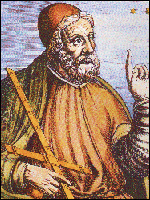

Batlamyus
M.S yaklaşık olarak 85 ve 165 yılları arasında yaşadığı kabul edilen Batlamyus'un hayatıyla ilgili çok fazla bilgi bugüne ulaşmamıştır. İslam coğrafyasındaki bilim insanlarının da yazıtlarında da yaklaşık olarak 78 yaşında hayatını kaybettiği yazılmaktadır. Bazı kaynaklarda adı Ptolemaios olarak da geçer. Ancak harf uyuşmazlığı nedeniyle İslam dünyasında Batlamyus olarak anılmıştır. İskenderiye'de yaşadığı düşünülmektedir. Ancak millet olarak Mısırlı mı yoksa Yunan mı olduğu tartışmalıdır.
Matematik, astronomi, optik ve coğrafyaya yaptığı katkılarla bilinir. Astonomi alanındaki görüşleri yüzyıllarca Avrupalı devletler ve kilise tarafından resmi düzeyde kabul görmüştür.
Batlamyus'un Coğrafyaya Katkıları
Batlamyus, coğrafya adlı yapıtıyla matematiksel coğrafyanın kurucusu olarak bilinmektedir. Bu kitap kendisinden sonra yüzyıllar boyunca birçok coğrafyacı tarafından başucu kitabı olmayı başarmış bir eserdi. Sekiz bölümden oluşan bu kitap, matematiksel coğrafya ile haritaların nasıl çizilmesi gerektiğine dair gerekli bilgilerle yüklüdür. Batlamyus bu kitabı yazarken Eratosthenes, Hiparkhos, Strabon ve Surlu Marinos'un fikirlerinden faydalanmıştır.Kitabın birinci bölümü o dönem için bilindiği ve keşfedildiği kadarıyla Dünya'nın kartografik izdüşüm yöntemleri hakkında ayrıntılı bilgileri içerir. İkinci bölümden yedinci bölüme kadarki kısımda o dönem için bilinen ülkelerin önemli şehir ve noktaları hakkında bilgiler verilir. Bu bilgiler arasında kentler, nehirler ve dağlar, şehirlerin enlem ve boylamları gibi bilgiler yer almaktadır. Elbette o dönemde coğrafi keşifler gerçekleşmediği için bugünkü Dünya haritası gibi değildir. Dünya, yaklaşık olarak 20° güneyden, 65° kuzeye uzanırken; batıdaki Kanarya Adaları'ndan, bunların yaklaşık olarak 180° doğusundaki bölgeleri kuşatmaktadır.Batlamyus'un Dünya haritasına dair söylediklerinin çoğu sonradan hatalı kabul edilmiştir. Bunun sebebi olarak da başlangıç meridyenini düzgün belirleyememesi ve bundan dolayı verdiği diğer koordinatların hatalı olduğu gösterilir. Ayrıca Dünya'nın büyüklüğünü ve diğer kıtaları da bilmediği için hatalar artmıştır. Ancak Batlamyus'un coğrafyaya en önemli katkısı ve bu çalışmaların değeri, yukarıda da belirttiğimiz gibi, matematiksel coğrafyanın kapsamlı olarak ele alınması ve bu alandaki bilgilerin derlenip geliştirilmesidir. Bu tarz, coğrafyada günümüze kadar ulaşmıştır.Batlamyus'un coğrafyaya katkılarından en önemlisi de zaten budur.Kitabın sekizinci bölümü ya da sekizinci kitap ise astronomiyle ilgilidir.Batlamyus'un Diğer Alanlarda Bilime Katkıları
Batlamyus'un yüzlerce yıl bilimin gündeminde kalmasının en önemli sebeplerinden biri, astronomialanında söyledikleridir. Bildiğiniz gibi kilise yüzlerce yıl Dünya'nın evrenin merkezinde olduğunu ve diğer tüm gök cismi ve gezegenlerin Dünya'nın etrafında döndüğünü söylüyordu. Bunda dayanak noktaları Batlamyus'tur. Batlamyus, Aristoteles fiziğinden esinlenerek evreni bir küre şeklinde tasvir etmiş ve Dünya'yı da bu sistemin merkezinde hareketsiz olarak duran bir gezegen olarak kabul etmiştir. Batlamyus'un bu sisteminde sabit yıldızlar evrenin sonudur.Batlamyus, Almagest adlı kitabının başında trigonometriye dair de birçok hesaplamalar ve kapsamlı bilgiler vermiştir. Bunlarla birlikte Batlamyus'un optik alanında da kapsamlı çalışmaları bulunmaktadır. Kendisinden önceki bilim insanları gibi Batlamyus da görmenin, gözden çıkan ışınlar yoluyla gerçekleştiğini benimsemiştir. Bu görüş, daha sonraları İslam dünyasındaki araştırmalarda da kullanılmış ve kabul görmüştür. Katoptrik (yansıma) konusuyla da ilgilenmiş ve bu alanda da üç prensip ortaya koymuştur. Bu prensipler şu şekildedir.- Aynada görünen nesne, gözün konumuna bağlı olarak aynadan nesneye yansıyan görsel ışın yönünde görünür.- Aynadaki görüntü, nesneden ayna yüzeyine çizilen dikme yönünde ortaya çıkar.- Geliş ve yansıma açıları eşittir.Batlamyus'un Eserleri
Almagest (Büyük Bileşim ya da Megale Syntaxis)
Tetrabiblos (Dört bölümden oluştuğu için bu adı vermiştir.)
Coğrafya